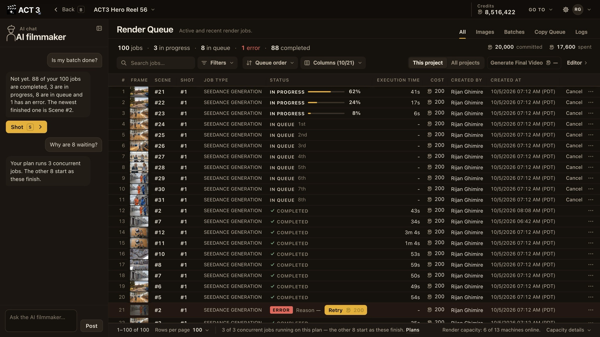

Step 5 of 6
Watch the renders
Builds run in the background, so you can keep working. Open Render Queue to see what is rendering, queued, done or failed. Click Editor to go back to your shot.

What this page is
The Render Queue lists every image and video job of your project: the frame, the scene and shot, the model, its status, how long it took and what it cost. Open it from Go to in the Editor's top bar (or the gear beside your film's name).
- IN PROGRESS rows show a progress bar.
- IN QUEUE rows wait their turn; your plan sets how many jobs run at once.
- COMPLETED takes are already in the shot's Generation History.
- An ERROR row gives its reason and a Retry button with its price.
The AI filmmaker is here too: ask "Is my batch done?" and it answers from the queue.
You do not have to wait on this page. Keep reviewing and changing other shots in the Editor; finished takes appear there on their own.
Why you go back to the Editor next
Click Editor at the top right. With takes rendering across the film, the next job is to move through it and watch the result.